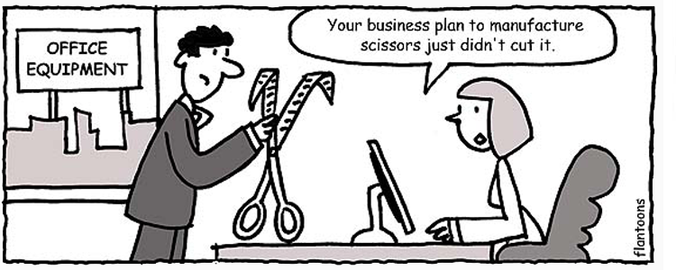

(Photo from Mashable)
Remeniscing the age of dictionaries
I still remember using Google Translate for the first time in 2008. It was one of these few moments in my life when I was immediately amazed. Growing up learning two different foreign languages (English and French), I understand the pain many people experience as they have to navigate through thick and dusty dictionary books to get the definition for a specific word, spending a lot of time along the way.
All of a sudden, you have this tool that can instantly translate a foreign word into your native language. For all language learners and everybody else around the world, what a time to be alive!
Without a doubt, Google Translate has since served as my go-to tool for translation purposes. With Google Translate, you can now translate not only text but also speech, images, sites, or even real-time videos from one language to another. It offers a desktop interface, as well as native apps in Android and iOS. Currently, Google Translate boasts a total of 103 languages and more than 200 million users daily.
From translation to learning
Nonetheless, Google Translate remains a purely translation tool (an excellent one at that). This means that for the majority of users, their end goal is simply to get down to the translation of a specific term they already have in mind. Other than such, users will unlikely spend any more time with the tool and ultimately will leave.
Suddenly a thought then came to my mind one morning:
What if Google Translate can be more than just a translation tool? What if it can also be an effective learning tool for language students?
If you were ever a language learner, you would truly understand the importance of discoverability. Sometimes you learn new words or phrases not only by coming to them (you read a textbook, you see a word, and you find out what its definition is), but very often do they come to you by chance (you walk around a foreign town during your travel, you overheard someone utters a local slang, and...you scratch your head wondering what it means). Indeed, discoverability is a super prominent aspect of language learning that we typically overlook.
Idioms and slangs are common contenders for things that students typically discover by chance rather than through textbooks (Cartoon by Flantoons)
What if Google Translate can provide a helping hand by offering users this sense of discoverability? What if translating a word doesn't have to be the sole final objective of using the tool, but also discovering myriad of ways in which this word can be manipulated in a certain language? Considering the enormous sets of data which Google has accumulated over time, and the emerging technologies that can accurately learn and understand users' behaviors as well as context (great example: artifical intelligence with Google Assistant), it provides us with a great opportunity to transform Google Translate into a tool that can substantially help people learn a new language better.
A re-imagination project
With these questions in mind, I decided to take action and embark on a project to answer them. Essentially, there're three primary action items entailed:
- Learn as well as understand the technical insight and infrastructure behind Google Translate (which is a stepping stone to understand its design possibilities).
- Gain a better understanding of Google Translate's users' context, which includes not only what they know they're looking for, but possibly what they don't.
- Explore design possibilities and come up with a set of conceptualized ideas that could serve as potential solutions.
As I go through the execution of this project, I will continue to post information regarding its progress. In all cases, I'm certainly looking forward to the valuable learnings I will obtain from this endeavor. Do stay tuned for more updates!